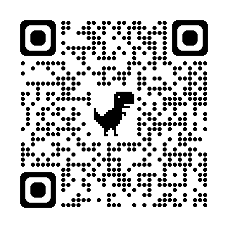

Shared Meaning
I · XIII
A monograph on inquiry
Shared
Meaning
사람과 AI는 같은 단어를 쓰지만,
같은 것을 보고 있지 않다.
Wonder는 그 차이를 Reflect하고, 의미를 같이 짓는 일이다.
/socrates · /evolve-step · /ontology
SPEAKER · LINKEDIN

이재규 · Jaegyu Lee
II
The Premise
Premise · 같은 단어, 다른 영역
같은 단어를 써도,
서로 다른 영역을 본다.
"성과"라는 한 단어 안에 매출, 학습 속도, 팀 분위기, 출시 속도, 채용 성공률, 고객 만족도가 다 들어 있다. 단어 자체는 이 영역을 통째로 가리킨다.
그래서 한 명은 매출을 떠올리고, 다른 한 명은 팀 분위기를 떠올린다. 같은 단어를 쓰지만 본 것이 다르다. 협업의 어긋남은 거의 여기서 시작된다.
Wonder는 그 단어가 어디까지 가리키고 어디부터는 아닌지, 두 사람이 함께 알아내는 일이다.
III
The Method
Method · Socratic Reasoning의 네 단계
Wonder, Reflect,
Refine, Restate.
Socratic Reasoning을 네 단계로 풀어 놓는다. 단계마다 작은 스킬 하나가 맡는다. 단계가 끝나면 다음 단계가 그 결과를 입력으로 받아 이어간다.
IV
Sub-skill · I
/wonder · 단어 안의 또 어떤 의미
Wonder:
단어를 풀어 헤친다.
막연한 단어 하나를 받으면, AI가 그 안에 숨어 있을 법한 의미 후보를 펼쳐 놓는다. 좁힐 시점은 아직 아니다. 사용자가 한 번도 떠올리지 않은 갈래까지 펼쳐 보이는 것이 이 단계의 역할이다.
/wonder
단어 안의 후보 의미를 Wonder한다
"성과"라는 단어 하나를 받으면, 매출 · 학습 속도 · 팀 분위기 · 출시 속도 · 채용 성공률 · 고객 만족도 같은 후보 의미 셋~다섯을 펼친다. 이때는 좁히지 않는다. 후보를 가능한 한 다양하게 늘리는 일에 집중한다.
단어 한 줄
→
/wonder
→
후보 의미 N개
→
scratch · wonder 섹션
Wonder가 충분하지 않으면 다음 단계의 Refine은 표면적이 된다. 좁히기 전에 충분히 펼친다.
V
Sub-skill · II
/reflect · 서로 다른 의미를 비춘다
Reflect:
차이를 마주 본다.
AI가 펼친 후보들을 사용자 앞에 놓는다. "당신이 떠올린 것은 매출이었는데, 모델은 학습 속도와 팀 분위기를 함께 가리키고 있었다." 이 단계의 산출물은 새 의미가 아니다. 차이가 있다는 사실을 깨닫는 것이다.
/reflect
사람과 모델 사이의 의미 차이를 비춘다
Wonder가 펼친 후보를 사용자가 직접 골라 본다. 자신이 떠올렸던 것 / 떠올리지 않았던 것이 한 화면에 같이 놓인다. Refine은 아직 하지 않는다. 차이를 본 것만으로 충분하다.
wonder 후보
→
/reflect
→
차이 인식 (양쪽 의미)
→
scratch · reflect 섹션
Refine 전에 차이를 본다. 이 단계가 빠지면 Refine된 의미는 한쪽이 다른 쪽을 흉내낸 가짜가 된다.
VI
Sub-skill · III
/refine · shared meaning
Refine:
한 줄의 같은 의미.
드러난 차이를 토대로, 사람과 AI가 같이 가리키는 의미를 한 줄로 합친다. "성과 = 이번 분기 매출과 채용 성공률, 둘 다." 같은 줄이 나온다. 이 한 줄이 shared meaning이다.
/refine
차이를 같은 의미 한 줄로 합친다
Reflect가 본 두 의미의 교집합(또는 사용자가 양쪽 모두 포함해야겠다고 결정한 합집합)을 한 줄로 적는다. 양쪽 모두 "이 줄이 우리가 가리키는 것이다"라고 동의할 수 있는 형태로.
차이 인식
→
/refine
→
shared meaning · 한 줄
→
scratch · refine 섹션
Refine은 평균이 아니다. 양쪽이 같은 줄을 가리킬 수 있어야 한다.
VII
Sub-skill · IV
/restate · goal을 다시 적는다
Restate:
goal이 또렷해진다.
shared meaning이 만들어지면, 그 의미로 원래의 막연했던 요청을 다시 적을 수 있다. "성과를 높이고 싶다" → "이번 분기 매출과 채용 성공률을 둘 다 높이고 싶다." 단어는 같지만 가리키는 영역이 좁혀졌다.
/restate
shared meaning으로 goal을 한 줄 재진술
Refine이 만든 한 줄을 입력으로, 사용자 원래 요청을 같은 의미 위에서 다시 적는다. 이 줄이 다음 단계(Seed)의 첫 번째 칸인 goal로 그대로 들어간다.
shared meaning
→
/restate
→
goal · 재진술 한 줄
→
scratch · restate 섹션
처음의 막연함이 사라진다. 다음 단계는 이 한 줄 위에 제약과 성공기준을 얹는다.
VIII
Orchestrator
/socrates · 네 단계를 묶는 Ralph 루프
Socratic Reasoning을 한 번 돌리고 끝나지 않는다.
한 사이클(W → R → R → R)이 끝나도 Seed의 세 칸(goal · constraints · acceptance_criteria) 중 하나라도 비어 있으면 다음 사이클을 돈다. 다음 사이클의 Wonder는 비어 있는 칸 쪽으로 좁혀진다.
/socrates
네 단계를 Ralph 루프로 묶어 Seed를 산출
막연한 한 줄을 받아 4단계를 반복하며, 매 사이클 끝에 Seed 세 칸의 정착을 Seed Gate에서 점검한다. 정착하면 닫힌 Seed 한 묶음을 떨어뜨린다.
막연한 한 줄
→
W · R · R · R
↻
Seed
IX
Beyond Seed
/evolve-step · 사각지대
한 번 모인 Seed는
한 시야 안의 한 점이다.
한 번 모인 Seed는 사용자 시야 안에서 만든 한 점일 뿐이다. 그 점 바깥에 어떤 의미가 잘려 나갔는지 다시 보는 일은 AI가 빠르고, 채택은 사람이 한다.
두 질문, 여섯 후보
- 놓친 사용자 시각 셋. 같은 산출물에 영향을 받지만 Seed에 안 들어 있는 사람들.
- 잘려 나간 가능성 셋. Seed의 좁힘이 의도치 않게 배제한 시나리오·대안.
여섯 후보가 한 화면에 놓이고, 사용자가 ☑/☒로 채택한 것만 Seed v2에 반영된다. 추천을 자동 채택하지 않는다.
/evolve-step
Seed v1 → Seed v2 (사용자 채택만 반영)
사이클이 끝날 때마다 호출. v1을 입력으로 받아 사각지대 두 질문을 묶어 던지고, 채택된 의미만 v2에 옮긴다. socrates.md의 ## Seed 섹션은 새 내용으로 통째 교체된다.
Seed v1
→
두 질문 · 6 후보
→
사용자 ☑/☒
→
Seed v2
X
Ontology
/ontology · 단어의 경계를 정하는 일
단어가 가리키는 영역의 가장자리.
Seed.goal을 한 단어로 보고 그 단어가 어디까지 가리키는지, 그 경계를 같이 정한다. 세 항목으로 한 층을 짠다.
- idea. Seed.goal 그대로. 단어 자체.
- boundary. 그 단어가 어디까지 안이고 어디부터 밖인가.
- properties. boundary 안에 반드시 들어가는 핵심 요소 셋.
action은 묻지 않는다. Seed의 acceptance_criteria가 이미 "무엇이 동작해야 하는가"를 적고 있다.
XI
Stop Rule · Architecture
어디까지 묻고 멈출지 기준 세우기
Ralph 루프 · Seed 사이의
ontology 유사도가 멈춤을 부른다.
한 사이클이 끝나면 socrates 컴포넌트가 새 Seed를 떨어뜨린다. 새 Seed와 직전 Seed의 ontology를 비교해 충분히 같으면 거기서 멈춘다. 아니면 다음 사이클로 들어간다.
XII
Convergence
Convergence · shared meaning이 들어서는 순간
두 ontology가 충분히
가까워졌다는 신호.
사이클이 한 번 더 돌 때마다 새 ontology가 만들어진다. 직전 ontology와 이번 ontology가 같은 의미를 가리키는가. 그 유사도가 멈춤의 신호다.
Cycle n
idea성과를 높인다
boundary매출과 채용, 둘 다
prop · 1매출액
prop · 2거래 건수
prop · 3채용 합격률
compare
0.85+
CONVERGE · STOP
Cycle n+1
idea성과를 높인다
boundary매출과 채용, 둘 다
prop · 1매출액
prop · 2거래 건수
prop · 3신규 고객 수
XIII
Coda
Socratic Reasoning은 답을 주지 않는다.
같은 의미를 짓는다.
네 단계의 Socratic Reasoning, 한 번의 사각지대 검토, 한 층의 경계. 이 셋이 모여 사람과 AI가 같은 영역을 가리키게 만든다.
처음의 막연한 단어 하나는 그제서야 두 시야 모두에서 같은 것을 가리킨다.
SHARED MEANING · /socrates · /evolve-step · /ontology